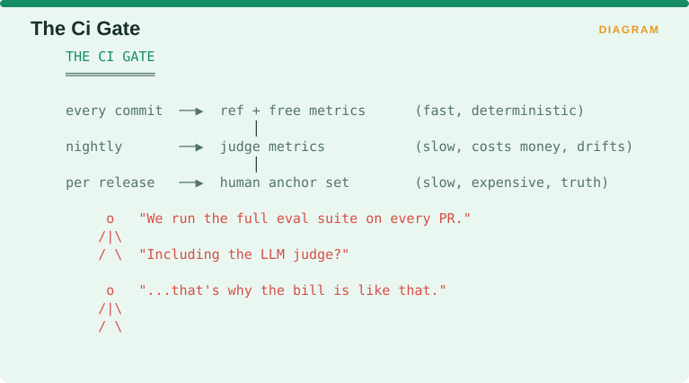
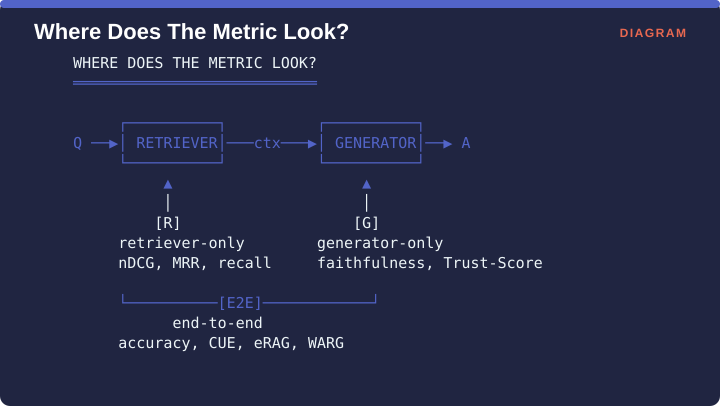
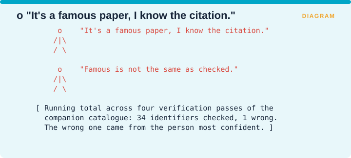

Measuring Retrieval › Chapter 2 - The Facet System
Chapter 2 - The Facet System
Dimensions tell you which question a metric answers. Facets tell you which other metrics it can legitimately be compared with, and this turns out to matter just as much, because the most common way to produce a meaningless number is to average two metrics that were never counting the same kind of thing. Teams do this routinely, putting a score that was computed once per sentence next to a score that was computed once per question and taking the mean of the two.
There are four facets, and every metric in this book is tagged with all four.
2.1 Facet A - Unit of analysis
The unit of analysis is simply the thing you get one number for. It sounds trivial and it is the facet people get wrong most often.

The figure arranges the possible units as a ladder, from the widest to the narrowest. At the top is the system, where you get a single number for the entire deployment, such as an Elo rating or the size of your index. Below that is the corpus, one number for the whole document collection, which is where coverage and drift measurements live. Then the session, one number per user journey, which is where you measure things like whether someone gave up. Then the query, one number per question asked, which is where nDCG, MRR and accuracy sit and where most people spend their time. Then the passage, one number for each retrieved chunk of text, which is where contribution metrics like DIG and Gain operate. At the bottom is the claim, one number for each individual factual assertion in an answer, which is where FActScore and claim recall operate.
The rule that follows from the ladder is that you aggregate within a unit and never across units. A claim-level metric and a query-level metric can sit side by side on the same dashboard quite happily, and they cannot go into the same average.
The reason is worth working through, because it is not obvious. Suppose one question produces an answer containing forty separate factual claims and another produces an answer containing two. At the query level, each of those questions contributes exactly one number to your average, so they count equally. At the claim level, the first question contributes forty numbers and the second contributes two, so the first question is twenty times more influential. Neither weighting is wrong, and they are answering different questions, so an average that mixes them is answering neither.
2.2 Facet B - Supervision
Supervision describes what a metric needs in order to produce a score at all, and it ranges from needing nothing but the system’s own output to needing a person.
| Value | Meaning | CI-friendly? | Cost |
|---|---|---|---|
| ref | Reference-based; needs golden answers | Yes | Label creation |
| free | Reference-free; needs no ground truth | Yes | Compute only |
| judge | LLM-as-judge scoring | Partly | API calls + drift risk |
| human | Human annotation | No | Time, expertise |
Reference-based means the metric compares your system’s output against a correct answer that somebody wrote down in advance, so you have to build and maintain a set of those answers. Reference-free means the metric can score the output using only the output and the retrieved documents, so it costs computation and nothing else. Judge means a language model reads the output and scores it, which is flexible and introduces the drift problem from §1.4. Human means a person does it.
This facet decides something very practical, which is what you are able to run automatically every time somebody changes the code.

The figure sets out the arrangement that works. Reference-based and reference-free metrics are fast and give the same answer every time, so they run on every commit. Judge metrics are slow, cost money per call, and drift over time, so they run nightly. A human-annotated anchor set is slow, expensive and authoritative, so it runs once per release. Teams that skip this arrangement and run the entire suite on every pull request usually discover the problem when the invoice arrives.
This is also why RAGAS spread so quickly through continuous integration pipelines while ALCE did not. RAGAS is reference-free and needs no golden answers, ALCE is reference-based and does. For your engineering practice, that single difference matters more than any difference in what the two of them actually measure.
2.3 Facet C - Stage
Stage records where in the pipeline the metric is looking.

A query goes into the retriever, the retriever passes context to the generator, and the generator produces an answer. A metric can watch any of three places along that path. Retriever-only metrics, marked R, look at the ranked list before the generator has seen it, and this is where nDCG, MRR and recall live. Generator-only metrics, marked G, look at the answer given the context it was built from, and this is where faithfulness and Trust-Score live. End-to-end metrics, marked E2E, look only at the question and the final answer and treat everything in between as a black box, which is where plain accuracy, CUE, eRAG and WARG live.
The diagnostic value here is high. If your end-to-end number drops and you do not have an R number and a G number beside it, you have no way of telling which half of the system caused the drop, so you are reduced to guessing or to changing things until the number recovers. This is the entire argument behind RAG-X, which separates retrieval and generation scoring specifically so that an error can be attributed to one component, because an aggregate number cannot tell you whether a failure came from retrieving the wrong thing or from writing the wrong answer about the right thing.
2.4 Facet D - Verification tier
This facet was added late, during a review of the catalogue that this book was built from, and it records two different things about a citation.
| Mark | Meaning |
|---|---|
| ESTABLISHED | Established - widely adopted, multiple independent uses |
| EMERGING | Emerging - published and awaiting broad replication |
| o | Practitioner-only - blog/industry, no peer review |
| VERIFIED | Citation verified against primary source this pass |
| OPEN | Citation asserted from memory, NOT verified |
The first three marks describe how well accepted a metric is. The last two describe whether the reference given for it in this book was actually checked against the original paper. Those are independent properties, and keeping them separate is the point of the facet.
An example from this book’s own construction shows why. The AIS metric is about as established as anything in the attribution literature, and it was nevertheless carried in the working catalogue with the venue given as TACL 2023. It was published in Computational Linguistics 49(4):777-840. The metric was established and the citation was wrong, and treating those two properties as one is exactly how an incorrect reference gets copied from paper to paper for years.

Across four verification passes over the companion catalogue, 34 identifiers were checked and one was wrong. The wrong one came from the person who was most confident about it.
Measuring Retrieval · Madhava Gaikwad · First edition, September 2026